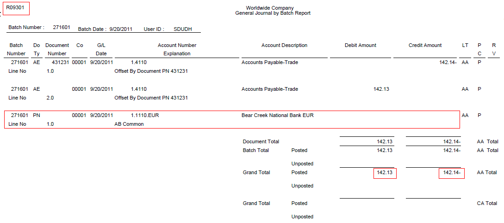

1* It will print the error message - Batch is out of balance, if the net amount of debits and credits from F0911 does not equal zero.
2* It also prints the net difference of amount calculated from F0911 transactions for the batch out of balance.
| Purpose |
| Scope |
| Details |
| Overview |
| Program Functionality |
| Setup |
| Processing Options |
| Date Range Tab |
| Ledger Type Tab |
| Data Selection |
| Reviewing the Report |
| Resolving the Integrity |
This document provides an overview of the Batches Out of Balance report (R007032) in 8.9 release and above, including the overview, program functionality, setup, and information on reviewing and resolving the integrity report.
This document is intended for Finance Functional users who will be running and troubleshooting the General Accounting Integrity reports.
The Batches Out of Balance report (R007032) helps to locate batches in which the net amount of debits and credits for F0911 transactions does not equal zero.
The Batches Out of Balance report (R007032) reviews the net amount for F0911 general ledger transactions in each batch. If the net amount is not zero, it would calculate the net difference and prints the batch details on the report. If the amounts net to zero, the batch is in balance and does not print.
1. From Date and 2. Thru Date
2. Prior Days
1. Ledger Types
You may specify a batch number, batch type, and company number in data selection. This would help to improve processing time for the report.
1* It will print the error message - Batch is out of balance, if the net amount of debits and credits from F0911 does not equal zero.
2* It also prints the net difference of amount calculated from F0911 transactions for the batch out of balance.
To analyze the further detail records for a batch, run the General Journal by Batch report (R09301).

For instance, in the Batch Number 271601 (Batch type M), R09301 shows the net total of debits (142.13) & credits (-142.14) differ by 0.01, causing the batch to go out of balance.
Some typical discrepancies, causes, and possible resolutions of similar scenarios are listed as follows:
| Discrepancies | Reason | Resolution |
|---|---|---|
| Batch posted out of balance | The batch was purposely posted out-of-balance. | Select the Exclude Batch from Integrity Report field on the Batch Overrides form to remove the batch from the report. Maintain documentation for this batch. |
| Batch posted out of balance | Intercompany settlement constant is set to '*'. |
|
| Batch is partially posted |
A computer failure or job cancellation. |
|